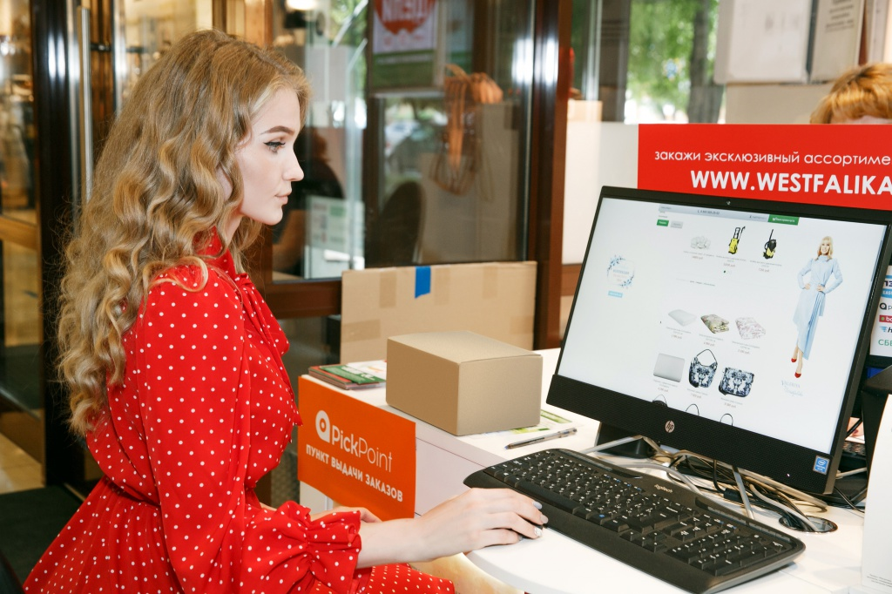
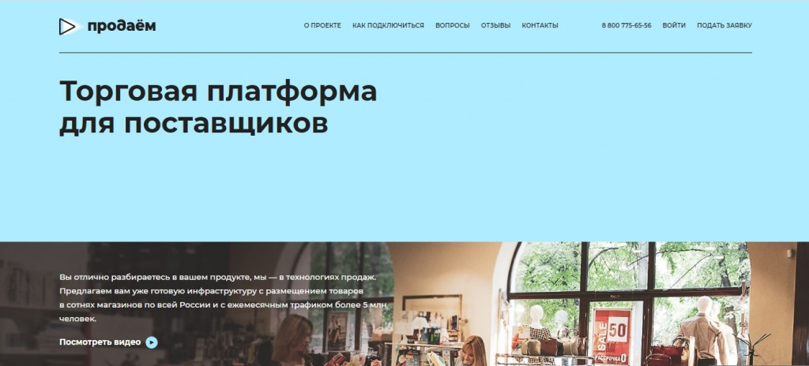
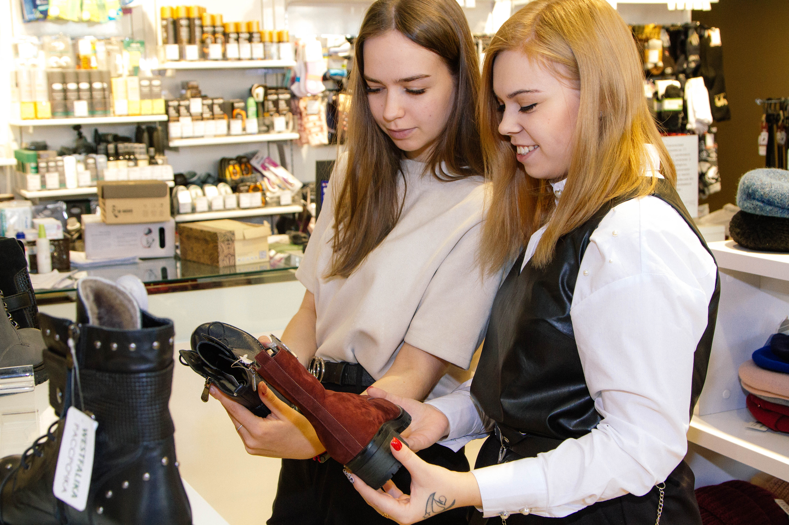

Главное о компании
которая объединяет маркетплейс westfalika.ru,
экосистему сервисов и сеть торговых и сервисных точек под брендом Westfalika.
В октябре 2017 года OR GROUP
привлекла 5,9 млрд рублей в ходе IPO на Московской Бирже (тикер ORUP),
эмитентом является ПАО «ОРГ».
OR GROUP была основана в 2003 году,
штаб-квартира Группы расположена в Новосибирске,
также есть офис в Москве.
Директор - Основатель OR GROUP: Титов Антон Михайлович
Направления развития:
Торговая платформа Westfalika:сеть
сервисных и торговых точек и
онлайн-площадка
OR GROUP развивает торговую платформу Westfalika, которая включает сеть сервисных и торговых точек по всей России и одноименную онлайн-площадку. Компания реализует как товары под собственными торговым марками (СТМ), так и партнерские товары (маркетплейс), через собственные онлайн- и офлайн-каналы продаж.
Формат универсального магазина
В 2020-2021 гг. году компания усовершенствовала формат магазина, который теперь представляет собой торговую точку с универсальным ассортиментом, что положительно влияет на конверсию и число позиций в чеке. Значительно расширить ассортимент позволил переход на модель маркетплейса при работе с поставщиками. Для взаимодействия с партнерами в конце 2019 года OR GROUP запустила платформу «Продаем» (www.продаем.рф), в рамках которой в онлайн-режиме можно отслеживать все движения товаров и управлять остатками.
В 2021 году компания добилась значительных результатов по данному проекту: к концу года работала с более 1000 партнерами, всего за год реализовала более 3,2 млн партнерских товаров. Лидерами по темпу роста остаются товары для дома, 80% продаж которых приходится на посуду, текстиль и мелкую бытовую технику. Наиболее высокомаржинальной товарной категорией является текстиль.
OR GROUP с 2020 года стала делать более частую ротацию ассортимента в магазинах, это касается и fashion-коллекций. Сейчас компания на каждый месяц формирует ассортиментную матрицу, что позволяет улавливать сезонные колебания, кратковременные всплески спроса на определенные товары и, как результат, увеличивать продажи.
Онлайн-продажи и мобильное приложение
В 2021 году компания добилась хороших результатов по онлайн-направлению: доля онлайн-продаж в выручке торговой платформы Westfalika достигла 20,9% (в 2020 году она составляла 18,3%). Группа успешно провела акцию «черная пятница»: прирост онлайн-продаж составил 44% в натуральном выражении и 30% в денежном, по сравнению с аналогичной акцией в 2020 году. Такие результаты объясняются значительным расширением ассортимента и более эффективным продвижением. Кроме того, развитие дополнительных товарных категорий позволяет компании сгладить сезонность, характерную для fashion-сегмента, и поддерживать высокий спрос на ассортимент в периоды традиционного сезонного спада продаж обуви и одежды. Так, во время новогодних каникул 2022 года онлайн-выручка компании выросла на треть.


История и достижения
Декабрь
OR GROUP и Navigator Acquisition Corp. объявили о подписании соглашения о продаже доли (share purchase agreement) МКК «Арифметика»
Ноябрь
Продукция фабрики «ОБУВЬ РОССИИ» вошла в «Золотую сотню» товаров
Робот Максим от МКК «Арифметика» выходит на рынок
OR GROUP создает отдельную структуру для развития логистических сервисов
Сентябрь
OR GROUP запустила цифровую платформу «ДаемДеньги» для развития онлайн-сервисов
OR GROUP объявила о планируемом слиянии ООО МКК «Арифметика» с компанией Navigator Acquisition Corp.
Июль
OR GROUP будет выпускать обувь с персонажами киноакадемии Universal Studios Limited
Июнь
OR GROUP завершила программу ребрендинга
Март
OR GROUP сменила тикер на Московской бирже
OR GROUP запускает федеральную рекламную кампанию для торговой платформы Westfalika
Январь
Проект платформы для поставщиков «Продаём» стал победителем конкурса Global CIO
OR Group и «Цайняо» будут вместе развивать постаматную сеть
2020
Декабрь
Компания запустила обновленный сайт Westfalika.ru в формате маркетплейса
Ноябрь
ПАО «ОР» объявило о запуске ребрендинга
Октябрь
Компания запустила новое мобильное приложение Westfalika
Сентябрь
OR GROUP стала первым сетевым партнером Wildberries по открытию пунктов выдачи заказов
Май
Фабрике «Обувь России» выражена благодарность от лаборатории АО «УК «Биотехнопарк» за помощь в предоставлении обуви для сотрудников
Февраль
Фабрике «Обувь России» присвоено 4 сертификата за лучший товар на 47-й международной выставке-ярмарке «Охота и рыболовство на Руси»
2019
Ноябрь
«Обувь России» запустила онлайн-платформу для работы с поставщиками и превратила магазины в офлайн-маркетплейсы
Сентябрь
«Обувь России» выпустила платежные браслеты «Арифметика»
Июль
«Обувь России» создала распределительный кол-центр на базе магазинов
Май
«Обувь России» разработала и внедрила в производство новый вид обуви для пищевой промышленности
Март
Сапоги из ЭВА Pioneer Of Arctic Travel получили знак «Лучший товар»
Февраль
В магазинах «Обуви России» заработали пункты выдачи посылок DPD
2018
Ноябрь
В магазинах «Обуви России» начали открываться пункты выдачи онлайн-заказов PickPoint
Май
«Обувь России» одной из первых в российском ритейле внедрила блокчейн
Март
«Обувь России» стала лауреатом престижной премии Private Label Awards
2017
Декабрь
RAEX (Эксперт РА) повысил рейтинг компании «Обувь России» до уровня ruBBB+
Октябрь
«Обувь России» провела IPO
Сентябрь
Антон Титов стал победителем премии «Лица Бизнеса» в номинации «Главный по полочкам»
Директор ГК «Обувь России» Антон Титов вошел в ТОП-250 высших руководителей в рейтинге Ассоциации менеджеров и ИД «Коммерсантъ»
Август
«Обувь России» начала производить более 20 новых моделей обуви из ЭВА, в том числе и сапоги по цельнолитой технологии.
Июль
«Обувь России» разместила 3-летние биржевые облигации на 1,5 млрд руб. и стала первым эмитентом в Секторе роста Московской Биржи
Май
«Обувь России» объявила новую франчайзинговую программу и к концу 1-го полугодия открыла почти 40 партнерских магазинов
Апрель
«Обувь России» заключила договор со Сбербанком на производство обуви для службы инкассации и охраны
ГК «Обувь России» получила престижную премию PRIVATE LABEL AWARDS 2017
Март
«Обувь России» запустила тестовые продажи резиновой обуви под брендом all.go
«Обувь России» объединила сборочные мощности на производственной площадке в Бердске
ГК «Обувь России» стала дипломантом премии IT Awards в номинации «IT-проект в реальном секторе»
Январь
В 2016 году «Обувь России» продала сопутствующих товаров на 1 млрд рублей
2016
Декабрь
ГК «Обувь России» стала лауреатом конкурса «Золотой медеведь»
«Обувь России» инвестирует 50 млн руб. в создание региональных дата-центров по всей России
«Обувь России» и Orisol открыли совместный учебный центр — первый и единственный в России и странах СНГ
Ноябрь
«Арифметика» стала финалистом конкурса «Национальная платежная инициатива»
RAEX (Эксперт РА) подтвердил рейтинг группы компаний «Обувь России» на уровне А+
ГК «Обувь России» получила национальную премию в области импортозамещения «ПРИОРИТЕТ-2016»
Октябрь
Магазины «Обуви России» начали принимать карты платежной системы «Мир»
Август
Интернет-магазин westfalika.ru подключился к системе «Арифметика»
Июнь
«Обувь России» вывела на рынок новый бренд обуви Medelista
Май
«Обувь России» запустила производство спецобуви на фабрике в Новосибирской области
Апрель
«Обувь России» запустила программу модернизации раскройно-швейного цеха на фабрике в Бердске
Март
«Обувь России» начала производить обувь для Арктики
«Обувь России» получила престижную премию PRIVATE LABEL AWARDS
2015
Ноябрь
ГК «Обувь России» приобрела обувную фабрику S-TEP
«Обувь России» вошла в топ-50 самых быстрорастущих компаний России
Октябрь
«Обувь России» запустила интернет-магазин Rossita
«Обувь России» начала выдавать целевые денежные займы на полисы ОСАГО
Сентябрь
ГК «Обувь России» получила престижную премию Retail Grand Prix
Август
Директор ГК «Обувь России» стал лауреатом премии «Лица бизнеса»
Июль
«Обувь России» запустила в продажу линейку одежды для дома
Июнь
ГК «Обувь России» получила престижную премию «Компания года»
Группа компаний «Обувь России» стала победителем конкурса «Лучший страхователь 2014 года по обязательному пенсионному страхованию»
Май
Впервые на площадке "Обуви России" прошла 1-я Сибирская конференция по e-commerce «Новые стратегии интернет-продаж»
Группа компаний «Обувь России» начала сотрудничать с QIWI.
Апрель
«Обувь России» запустила производство кроссовок на фабрике в Новосибирске
«Обувь России» запустила в продажу линейку бесшовного белья под брендом Westfalika
Март
«Обувь России» открыла направление товаров для детей Westfalika Kids
Февраль
Начало сотрудничества с российским поставщиков гранулята для обуви из ЭВА
Декабрь
Выпуск первой партии обуви в Черкесске
Ноябрь
Антон Титов стал «Человеком года-2014»
Октябрь
Первый рублевый контракт с Китаем
Сентябрь
Выход на рынок каталожной торговли - Westfalika Home
Приобретение обувной компании «Россита»
Июль
Обновленная Emilia Estra. Новое лицо бренда - Юлия Ковальчук
Новый бренд - Snow Guard
«Обувь России» лауреат конкурса «За успешное развитие бизнеса в Сибири»
Запуск продаж кремов для рук Westfalika Medical
Июнь
Открытие новой фабрики по производству сверхлегкой обуви из ЭВА
Май
Открытие первых магазинов Westfalika формата «флагман»
Март
Запуск интернет-магазина westfalika.ru
Февраль
Новый бренд - All.go
2013
Декабрь
Госгарантии на реализацию проекта — открытие обувной фабрики «ОБУВЬ РОССИИ» в Черкесске
Ноябрь
Директор ГК «Обувь России» Антон Титов стал «Ритейлером года»
Октябрь
Директор ГК "Обувь России" Антон Титов вошел в список финалистов престижного международного конкурса "Предприниматель года"
Повышение рейтинга надежности облигационного займа компании «Обувьрус» до уровня А+
Сентябрь
Финансовый директор ГК "Обувь России" заняла 1-ое место в рейтинге финансовых директоров
Число магазинов "Обувь России" превысило 250
Переход на МСФО. Создание ОАО
Август
Запуск сайта
Июнь
Крем для ног "Вестфалика Медицина" от компании "Обувь России" получил диплом престижной премии BASF в номинации "В ногу со временем"
Руководителя отдела закупа и сбыта ООО "Обувь России" наградили почетной грамотой министерства промышленности, торговли и развития предпринимательства НСО
ГК "Обувь России" вступила в АКОРТ
Май
Московская биржа допустила к торгам три выпуска биржевых облигаций ГК "Обувь России"
Апрель
Бренд "Вестфалика" стал лауреатом финального межрегионального конкурса "Лучшие товары и услуги Евразии - ГЕММА-2012"
Выход на рынок микрофинансирования
Развитие сети
2012
Сентябрь
Старт проекта обувной фабрики "Обувь России" в Черкесске
Рекламная кампания с участием Валерии
Июнь
Коммерческого директора обувного завода «Обувь России» в Новосибирске Кулешова Александра Васильевича наградили почётной грамотой министерства промышленности, торговли и развития предпринимательства Новосибирской области
Новый формат магазинов для ТЦ
Май
Продавец омского магазина "Вестфалика" заняла 2 место в городском конкурсе "Лучший продавец года"
Январь
Повышение рейтинга кредитоспособности
2011
Декабрь
Новые регионы
Ноябрь
Начало сотрудничества с дизайнером Томасом Франком
Октябрь
Новый бренд - "Вестфалика Медицина"
Июль
Новосибирский магазин «Вестфалика» на Маркса, 15 занял первое место в районном конкурсе «Лучшая организация торговли»
Дебютный облигационный займ
Продление контракта с Валерией
Июнь
Крем для ног под маркой «Вестфалика» стал победителем в конкурсе Cognis Formulation Award 2010
Подтверждение кредитного рейтинга
2010
Декабрь
Новое лицо бренда "Вестфалика" - Валерия
Октябрь
Развитие сети
"Вестфалика" один из самых дорогих брендов региона
Август
Расширение ассортимента
Июнь
ГК «Обувь России» стала лауреатом премии «Компания года»
2009
Август
Внедрение программы "Обувь с рассрочкой платежа"
Июль
Запуск системы эквайринга
Июнь
Обувь «Вестфалика» отмечена золотой медалью конкурса «Лучшие товары и услуги Сибири — ГЕММА-2009»
Декабрь
ГК «Обувь России» отмечена двумя дипломами Sales Business Awards
Ноябрь
Антон Титов, директор ГК «Обувь России», стал победителем конкурса «Предприниматель года» в номинации «Молодой предприниматель»
Октябрь
Компания «Обувь России» стала победителем конкурса корпоративных СМИ в номинации «Лучшая система корпоративных изданий»
Сентябрь
ГК «Обувь России» открыла 100-й магазин
Качественное развитие
Август
Первый конкурс "Серебряная шпора"
Рестайлинг сети "Вестфалика"
Июнь
ГК «Обувь России» получила диплом «За реализацию программ развития персонала»
Руководитель отдела R&D ГК «Обувь России» Ольга Отческая получила почетную грамоту мэрии Новосибирска
ГК «Обувь России» стала победителем регионального конкурса «За успешное развитие бизнеса в Сибири»
Февраль
Победитель конкурса "За успешное развитие бизнеса в Сибири"
2007
Ноябрь
Рейтинг крупнейших компаний СФО
Сентябрь
Вексeльный заем
Август
Запуск нового бренда "Emilia Estra"
Март
Новый проект "Обувь в кредит"
Январь
Развитие сети
2006
Апрель
Оптовое направление
Март
Новый формат
Февраль
Ребрендинг сети магазинов "Вестфалика"
2005
Январь
Открытие представительства в Китае
2004
Апрель
Приобретение сети "РосОбувьТорг"
Январь
Запуск 30 магазинов "Вестфалика"
2003
Февраль
Создание компании и первый шаги по расширению сети